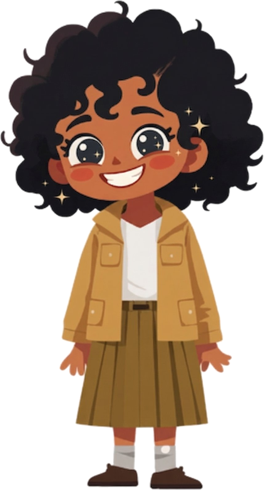
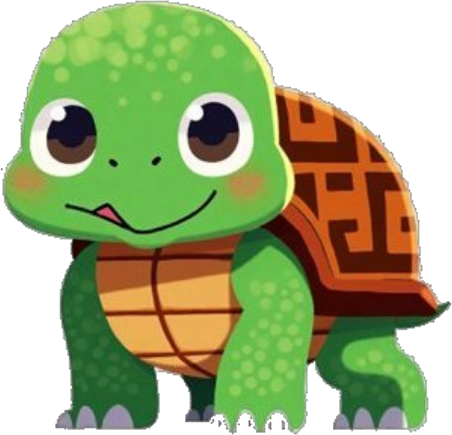
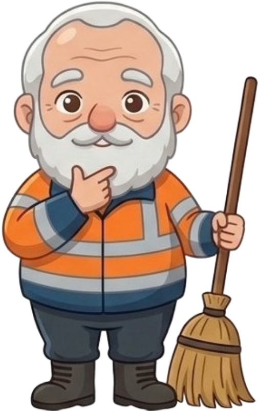
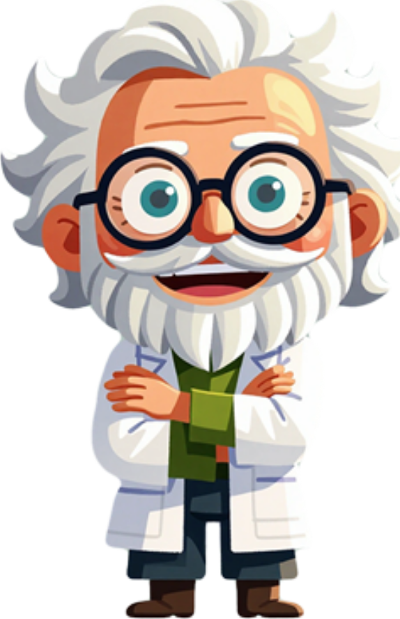

베이직
정독 · 강독 + 짧은 글쓰기
책을 함께 읽거나 중요한 부분을 골라 읽으며 내용을 충분히 이해합니다. 질문을 나누고, 요약과 자기 생각을 짧은 문단으로 써봅니다.
읽기의 기초와 문단 쓰기를 함께 연습합니다.
모모의 책장 · 수업 소개
책 한 권에서 시작해
아이만의 생각과 문장으로 이어집니다.

인물과 사건, 마음에 남는 문장을 살펴봅니다.
생각의 이유를 말하고 다른 관점을 만납니다.
대화로 꺼낸 생각을 자기 문장으로 정리합니다.
생각을 더 분명하게 전할 방법을 배웁니다.
함께 읽고 배우는 그룹수업
책을 함께 읽거나 중요한 부분을 골라 읽으며 내용을 충분히 이해합니다. 질문을 나누고, 요약과 자기 생각을 짧은 문단으로 써봅니다.
책에서 발견한 질문을 토론으로 확장하고, 주장과 근거를 연결해 글로 정리합니다. 개요를 세우고 글을 다듬으며 생각의 흐름을 만들어갑니다.
배움의 깊이와 방식에 따른 선택
학생이 직접 만든 질문을 중심으로 서로 묻고 답합니다. 다른 해석을 비교하고 근거를 살피며, 다시 쓰기를 통해 생각과 표현을 정교하게 다듬습니다.
아이의 읽기 속도와 이해 수준, 표현 방식에 맞춰 선생님과 깊이 대화합니다. 필요한 읽기·말하기·글쓰기 연습을 개별적으로 살펴갑니다.
학년과 독서 경험을 함께 살핍니다
읽는 즐거움을 발견하고, 느낌을 말과 짧은 글로 표현합니다.
책에서 궁금한 점을 찾고, 자신의 말로 설명합니다.
다른 관점을 비교하고, 생각의 이유를 글로 정리합니다.
책 속 주제를 사회와 연결하며 비판적으로 읽고 논리적으로 씁니다.
고전 · 사회·과학 · 문학 · 인문·예술
다양한 책을 만나며 생각의 세계를 넓힙니다.
개설 학년·도서·정원·시간·수강료·참여 조건은 상담 시 확인해주세요.
모모의 책장 소개 · 1장 / 책 이야기
오래된 원형극장에 사는 아이 모모에게는 특별한 힘이 있습니다. 바로 다른 사람의 말을 온 마음으로 듣는 힘입니다.
사람들의 시간을 빼앗는 회색 신사들이 나타나자, 모모는 친구들의 도움을 받아 소중한 시간을 되찾기 위한 모험에 나섭니다.
누군가의 말을 충분히 듣는 시간.
자기 마음을 들여다보는 시간.
모모의 책장은 그 가치를
배움으로 잇고 싶습니다.
모모의 책장 소개 · 2장 / 함께할 친구들
다른 사람의 말에 깊이 귀 기울이는 아이입니다.
친구의 생각을 끝까지 듣는 배움을 떠올립니다.

모모가 길을 찾도록 돕는 거북이입니다.
서두르지 않고 다음 한 걸음을 내딛습니다.

천천히, 꼼꼼하게 거리를 청소하는 친구입니다.
한 문장씩 읽고 쓰며 꾸준히 쌓아갑니다.
모모의 책장 소개 · 3장 / 함께할 친구들
풍부한 상상력으로 이야기를 들려주는 친구입니다.
책에서 시작한 생각을 자기 이야기로 펼쳐봅니다.

모모가 시간의 비밀을 만나는 데 도움을 주는 인물입니다.
얼마나 빨리 했는지보다 무엇을 생각했는지 돌아봅니다.
캐릭터에서 떠올린 배움의 가치는 모모의 책장 소개를 위한 해석입니다.
모모의 책장 소개 · 4장 / 우리의 이야기
아이가 책 한 권을 펼칩니다. 낯선 인물과 새로운 세상을 만나고, 어느 문장 앞에서 잠시 멈춥니다. 왜 그랬을까? 나라면 어땠을까? 작은 질문이 생깁니다.
선생님은 그 질문에 귀 기울입니다. 친구는 다른 생각을 보탭니다. 아이는 자기 생각을 말하고, 들으며, 처음의 생각을 조금씩 넓혀갑니다.
대화가 끝나면 빈 종이 위에 자기 문장을 씁니다. 피드백을 읽고 다시 다듬으며, 무엇을 말하고 싶었는지 더 분명하게 알아갑니다.
읽는 시간이 생각하는 시간으로,
생각하는 시간이 표현하는 시간으로.
모모의 책장은 그 여정을 함께합니다.
다음 책장에는, 어떤 생각이 기다릴까요?